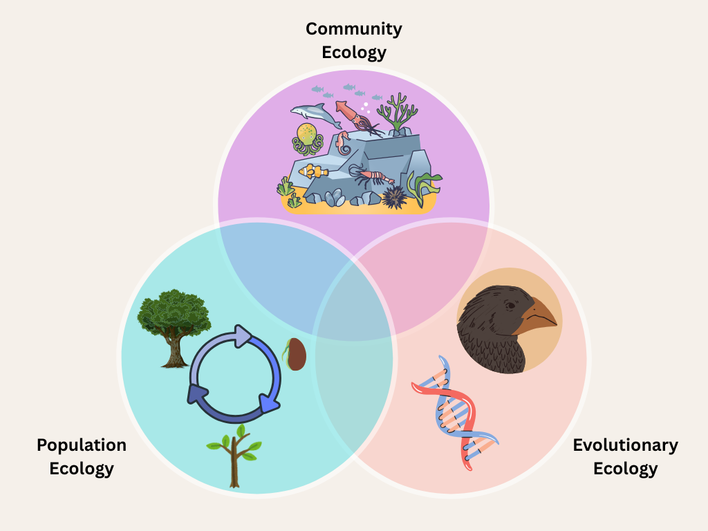

Research
My research interests center around understanding the ecological and evolutionary mechanisms that allow species to persist despite abiotic and biotic pressures. To address these questions, I use mathematical modeling to (1) reduce the dimensionality of complex problems, enabling clearer insights into underlying mechanisms; (2) explore a broad range of parameter values that may be impractical to investigate empirically; and (3) because I enjoy the process! My projects range from purely theoretical work, in which I explore a variety of possible mechanisms and outcomes, to data-driven modeling, where I investigate the mechanisms underlying the behavior of specific systems.
I classify my interests into three main categories: community ecology, population ecology, and evolutionary ecology; though, many of my interests often lie at their intersection, understanding how seemingly disparate mechanisms interact to influence persistence and coexistence outcomes.
Community Ecology
Understanding the ecological and evolutionary mechanisms that influence species coexistence has a long and rich history, especially in theory. I leverage the existing theory along with novel methodological techniques to further unravel these mechanisms. My current dissertation work aims to address:
- Following the extinction of a species in an ecological community, other species may consequently experience extinction due to reliance of that species for persistence, known as a secondary extinction. While in some cases, the casuse for secondary extinction is intuitive like in consumer-resource or mutualist interactions, some secondary extinction are a result of a string of indirect effects amongst a complex web of interactions. How can we identify when secondary extinctions will occur and why the secondary extinction occurs?
- Recent theory has shown that the order and timing of extinction can influence the composition and diversity of a disassembled community, known as an inverse priority effect. How common are inverse priority effects in natural systems and what mechanisms increase the likelihood of an inverse priority effect?
- While understanding how community composition changes over time has a rich history in community ecology, most studies either focus solely on community assembly (how invasion of new species impact composition) or disassembly (how extinction of a species impacts community composition). However, assembly and disassembly are increasingly being acknowledged the act on similar timescales. How do assembly and disassembly on the same time scale impact the dynamics of communities and does the structure of interactions web predict the dynamics of assembly and disassembly?
- A growing body of theory investigates how changing abiotic conditions can impact coexistence outcomes; however, how community assembly may change under changing abiotic conditions remains an open question. How does changing abiotic conditions alter community assembly outcomes?
In addition to these topics I am addressing in my thesis, I am also interested in topics that meld classic community ecology questions with population and evolutionary ecology.
- Many species go through several life stages that differ in key ecological traits; though, many theoretical community dynamics models do not incorporate these life history stages. How does age/stage structure influence coexistence outcomes?
- Evolution on ecologically relevant time scales have been shown to alter coexistence outcomes between species. However, how evolution may impact community assembly outcomes has receieved notably less attention. How does evolution impact outcomes and properties of community assembly?
Population Ecology
In addition to the community ecology-based aims in my dissertation, I am also interested in various in population ecology.
- Chaotic population dynamics have been documented in several species across the animal kingdom. However, some notable taxa are left out of these meta-analyses. How do chaotic population dynamics vary across the tree of life?
- Mathematical models are a key part of the endangered species listing process to test if species are predicted to go extinct on relevant time scales, known as a Population Viability Analysis. How can we continue to use PVAs to support conservation efforts across a wide variety of threatened taxa?
Evolutionary Ecology
Evolution on ecologically relevant timescales is becomingly increasingly documented in the empirical literature. Some questions in evolutionary ecology I am interested in include:
- Evolution can allow species to rebound from environmental change that otherwise would not be possible, known as evolutionary rescue. Theoretical evolutionary ecology has shown that genetic architecture can strongly influence the nature of selection dynamics. How does genetic architecture influence the ability of a species to undergo evolutionary rescue?
- Selection may act more strongly during certain life history stages of a population. How does the differential strength of selection on certain life history stages impact population dynamics?